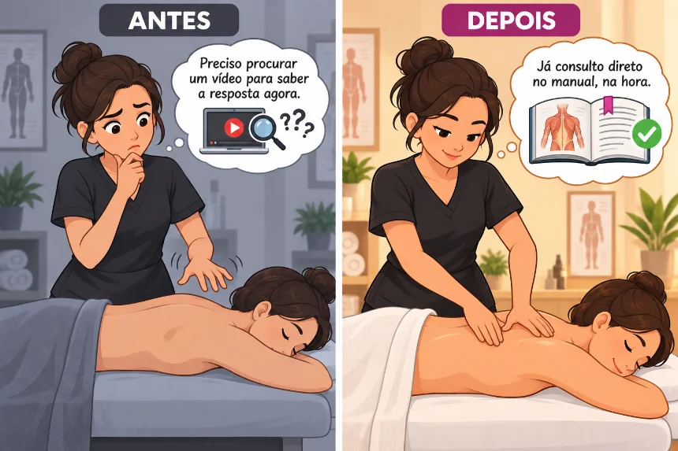
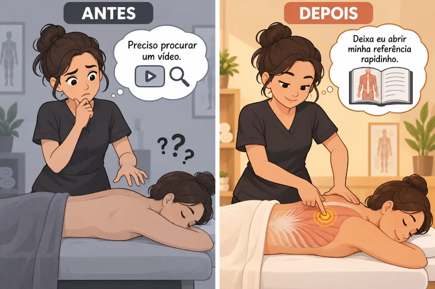
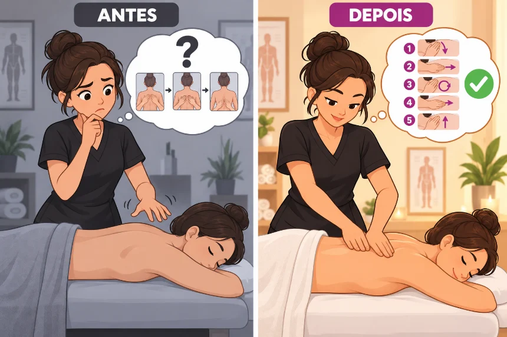
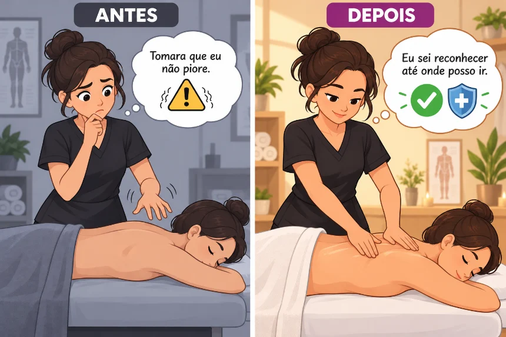
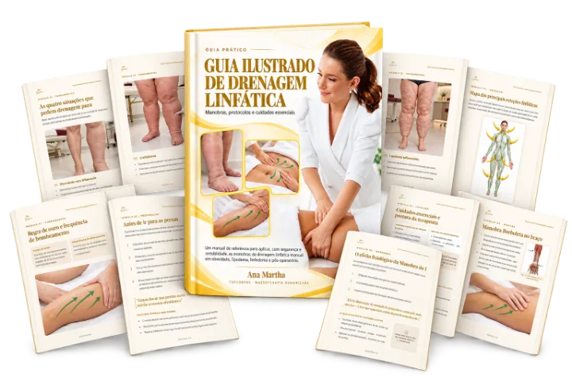

Mais de 70 manobras para tratar diferentes regiões do corpo. Para cada uma: onde dói, onde tocar, como tocar, qual pressão usar e por quanto tempo. Pronto para consultar com a cliente deitada na maca.
Aprenda onde tocar, como tocar, qual pressão e direção seguir para tratar todos os tipos de dores com esse Manual Ilustrado e tenha resultados imediatos

Mais de 70 manobras para tratar diferentes regiões do corpo. Para cada uma: onde dói, onde tocar, como tocar, qual pressão usar e por quanto tempo. Pronto para consultar com a cliente deitada na maca.

Não importa onde a dor está, você vai saber resolver. Você vai direto na região que precisa, da cabeça aos pés, sem procurar vídeo salvo no celular, print ou anotação solta.

Método validado, que uso há anos para ensinar minhas alunas. Você só precisa seguir a ordem, sem parar no meio do atendimento se perguntando o que fazer.

Alertas de segurança. O manual mostra quando NÃO massagear: inflamação, suspeita de fratura, sinais de trombose e outras situações que pedem mais cuidado, para você não ficar em dúvida se pode mexer ali.

Veja a manobra sendo feita antes de aplicar na cliente, sem ficar na dúvida se entendeu certo só pela ilustração.

Você manda sua dúvida direto pelo WhatsApp e recebe resposta na hora. Seja sábado, domingo ou feriado.

Aprenda uma técnica milenar que alivia dores em outras partes do corpo através dos pés. Um mapa ilustrado desses pontos, sem pagar nada a mais.

As principais regiões linfáticas e o sentido de cada movimento, para você aplicar sem ficar adivinhando para que lado deve ir.
Porque essa condição, com todos os bônus inclusos, não é para sempre.
De R$297,00
Por apenas 97 reais
Ou 12 x de R$ 9,45
Você economiza 200 reais
Pagamento único. Acesso vitalício. Sem mensalidade.
Fisioterapeuta e fundadora do TopCorpus
Sou casada, mãe de duas meninas, atuo há 20 anos na terapia do toque e me tornei uma das maiores referências do Brasil nessa especialidade.
Fundei a Escola TopCorpus, onde já ajudei mais de 60.000 alunas em 60 países a sair do zero até a profissionalização no toque terapêutico.
Esse manual reúne 20 anos da minha prática, prontos para você aplicar com segurança desde a primeira técnica.
Aprenda com quem vive essa profissão há 20 anos
Mas ainda pesquisa escondido antes de um caso diferente. No Manual, as referências estão organizadas por região, prontas quando você precisar.
E ainda sente frio na barriga quando a cliente aponta uma dor nova. Aqui você sabe o que fazer antes de colocar a mão, sem decorar nome de músculo.

Seu marido que chega com dor nas costas, sua mãe com as pernas doendo… Aprenda onde pode ajudar e onde é melhor nem tocar, sem risco de piorar quem você mais ama.
Não. Ele foi feito tanto para quem já atende quanto para quem está começando agora, com linguagem direta e sem termos técnicos complicados.
Sim. Você pode acessar direto pelo celular, sem instalar nada.
O Manual Ilustrado para Alívio da Dor com Massagem será enviado para o seu e-mail, assim que sua compra for concluída.
Não. Todas as manobras usam só as suas mãos.
Com certeza. O manual foi feito principalmente para isso.
Essas são situações que pedem mais cuidado, e o Manual mostra exatamente isso: os alertas e cuidados específicos para cada região, incluindo quando é melhor ter mais atenção. Ele te dá mais clareza nesses casos, mas não substitui uma avaliação médica ou fisioterapêutica quando ela for necessária.
Essa é uma das dúvidas que o manual resolve direto. Cada região tem uma seção de alertas mostrando os sinais que indicam que aquela dor pode não ser só tensão muscular, para você saber quando seguir com a massagem e quando é melhor encaminhar para avaliação de um profissional de saúde.
Sim. Em cada região do corpo, além de mostrar onde e como tocar, o Manual traz os sinais de atenção: inflamação, suspeita de fratura, sinais de trombose e outras situações em que a massagem não deve ser feita direto ali.